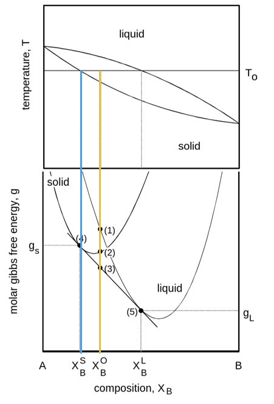
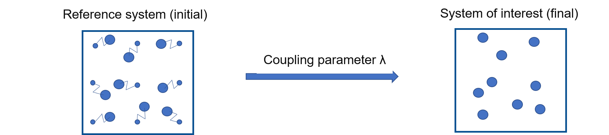
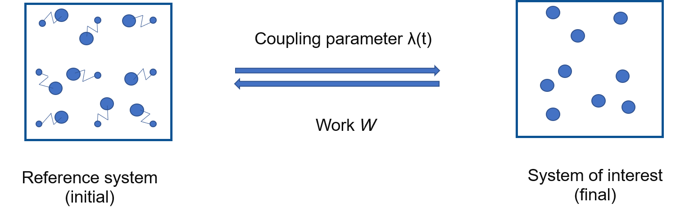
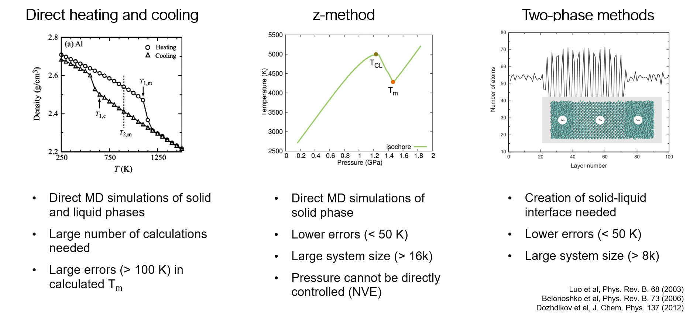

Validation of interatomic potentials #
In this notebook, we will run some validation calculations for interatomic potentials
Equation of State #
We can try to calculate an EV curve with the potential we just created in the last session. We start by importing the necessary modules
%config IPCompleter.evaluation='unsafe'
from pyiron import Project
import numpy as np
import matplotlib.pyplot as plt
import pandas as pd
First we create a project, which points to the calculations we did.
pr = Project('fitting')
Now we can get the potential we fitted to run with LAMMPS. For that, first we load the training job:
job = pr.load('pacemaker_job')
pace_lammps_potential = job.get_lammps_potential()
pace_lammps_potential
Now as we saw before, we can do an EV curve calculation for Al fcc.
lammps_job = pr.create.job.Lammps("ref_Al", delete_existing_job=True)
lammps_job.structure = pr.create.structure.bulk("Al", cubic=True)
lammps_job.potential = pace_lammps_potential
murn = pr.create.job.Murnaghan("Al_murn_ace")
murn.ref_job = lammps_job
murn.run()
murn.plot();
We can now compare this with DFT results. The DFT results are provided in the form of a csv file.
dft_ref = pd.read_csv('dft_ref.csv')
dft_ref.head()
plt.plot(dft_ref['volume'], dft_ref['energy_per_atom'], 'o', label='Ref')
plt.plot(murn['output/volume']/len(murn.structure), murn['output/energy']/len(murn.structure), 'o', label='fitted potential')
plt.legend();
For the simple potential, we have quite nice agreement with the DFT data!
Elastic constants #
job_ref = pr.create.job.Lammps('elastic_ref')
job_ref.structure = murn.get_structure()
job_ref.potential = pace_lammps_potential
job_ref.calc_minimize()
elastic_job = job_ref.create_job(pr.job_type.ElasticMatrixJob, f'elastic_job')
elastic_job.input["eps_range"] = 0.05
elastic_job.run(delete_existing_job=True)
elastic_job['output/elasticmatrix']['C'][0, 0]
print(f"C11 = {np.round(elastic_job['output/elasticmatrix']['C'][0, 0])} GPa")
print(f"C12 = {np.round(elastic_job['output/elasticmatrix']['C'][0, 1])} GPa")
print(f"C44 = {np.round(elastic_job['output/elasticmatrix']['C'][3, 3])} GPa")
From DFT calculations, C11, C12, and C44 are 129, 52, and 32 GPa, respectively. It is not excellent agreement, but for our very simple potential, these are reasonable results.
Phonons #
Now we can get phonon density of states using Phonopy.
job_ref = pr.create.job.Lammps('phonopy_ref')
job_ref.structure = murn.get_structure()
job_ref.potential = pace_lammps_potential
job_ref.calc_minimize()
phonopy_job = job_ref.create_job(pr.job_type.PhonopyJob, f"phonopy_job")
job_ref.calc_static()
phonopy_job.run()
plt.plot(phonopy_job["output/dos_energies"], phonopy_job["output/dos_total"],
lw=1.5,)
plt.ylabel("DOS")
plt.xlabel("Frequency (THz)");
Thermodynamics #
We can also calculate more complex properties for our potential, such as the melting temperature, or phase diagram itself. Since these calculations are more expensive, we will once again switch to an EAM potential.
But before that, a little bit about phase diagrams:
A simple phase diagram #

Phase diagrams provide a wealth of information such as: coexisting lines, melting temperature, phase stability, nucleation mechanism.
Calculation of phase diagrams: the essential ingredients #

Phase diagrams can be evaluated from free energy diagrams. The required input are:
\(G(P, T)\) for unary systems
\(G(x, T)\) for binary systems
To calculate this, we employ thermodynamic integration, in conjuction with a number of methodological improvements.
Theory behind free energy calculation
Please see the end of this notebook, or this publication for a longer discussion on the theory and algorithms.Start with creating a new project
pr = Project('thermodynamics')
Due to our limited time, we will show the calculation of melting temperature, the end point on the phase diagram. We leverage a software tool for calculation of free energies, calphy along with pyiron for efficient and automated free energy calculations. For a detailed tutorial, see here.
Calculation of melting temperature #
Solid free energy #
al_sol = pr.create.job.Calphy("Al_fcc",
delete_aborted_job=True,
delete_existing_job=True)
There are a number of input the job can take. We can gain some information about the job from the docstrings.
structure = pr.create.structure.ase.bulk('Al', cubic=True).repeat(3)
structure.plot3d()
al_sol.structure = structure
al_sol.potential = '2009--Mendelev-M-I--Al-Mg--LAMMPS--ipr1'
al_sol.input.equilibration_control = 'berendsen'
al_sol.calc_free_energy(temperature=[800, 1100],
pressure=0,
reference_phase="solid",
n_equilibration_steps=2500,
n_switching_steps=2500)
Before we actually run the calculation, let us discuss the various parameters. temperature keyword gives the temperature range over which the free energy is to be calculated. Since we provide 500, the free energy is calculated at this temperature. pressure denotes the pressure of the calculation, we chose 0 in this case. Since we are using a solid FCC lattice, we set reference_phase to "solid". This means that the Einstein crystal will be used as the reference system. Finally, we have n_equilibration_steps and n_switching_steps. n_equilibration_steps denotes the number of MD steps over which the system is equilibrated to the required temperature and pressure. n_switching_steps are the number of MD steps over which the system is continuously transformed between the given interatomic potential, and the reference Einstein crystal.
Now we can actually run the calculation:
al_sol.run()
Liquid free energy #
al_lqd = pr.create.job.Calphy("Al_lqd", delete_existing_job=True)
al_lqd.structure = pr.create.structure.ase.read('liquid.POSCAR', format='vasp')
al_lqd.potential = '2009--Mendelev-M-I--Al-Mg--LAMMPS--ipr1'
al_lqd.input.melting_cycle = False
al_lqd.input.tolerance.pressure = 1.5
al_lqd.calc_free_energy(temperature=[800, 1100],
pressure=0,
reference_phase="liquid",
n_equilibration_steps=2500,
n_switching_steps=2500)
al_lqd.run()
Finally, the results:
plt.plot(al_sol.output.temperature, al_sol.output.energy_free,
label="Al solid")
plt.plot(al_lqd.output.temperature, al_lqd.output.energy_free,
label="Al liquid")
plt.xlabel("Temperature (K)")
plt.ylabel("Free energy (eV/K)")
plt.legend();
argmin = np.argmin(np.abs(al_sol.output.energy_free - al_lqd.output.energy_free))
tm = al_sol.output.temperature[argmin]
tm
plt.plot(al_sol.output.temperature, al_sol.output.energy_free,
label="Al solid")
plt.plot(al_lqd.output.temperature, al_lqd.output.energy_free,
label="Al liquid")
plt.axvline(tm, ls='dashed', color='black')
plt.xlabel("Temperature (K)")
plt.ylabel("Free energy (eV/K)")
plt.legend();
We can see that calculated melting temperature, where the free energy of both solid and liquid phases are equal, is marked with the black dashed line above. Melting temperature calculated from experiments is 933 K, while from DFT it is 786-890 K (depending on the choice of exchange correlation functional). We can get better results by increasing the system size, and switching times for these calculations. If system size of approximately 4000 atoms, and more than 50 ps switching time is used, you would get 913 K as the melting temperature.
Calculation of free energies: Thermodynamic integration #

free energy of reference system are known: Einstein crystal, Uhlenbeck-Ford model
the two systems are coupled by $\( H(\lambda) = \lambda H_f + (1-\lambda)\lambda H_i \)$
Run calculations for each \(\lambda\) and integrate $\( G_f = G_i + \int_{\lambda=0}^1 d\lambda \bigg \langle \frac{\partial H(\lambda)}{\partial \lambda } \bigg \rangle \)$
To calculate \(F\),
for each phase
for each pressure
for each temperature
for each \(\lambda\)
If we choose 100 different \(\lambda\) values; 100 calculations are needed for each temperature and pressure!
Dimensionality: (phase, \(P\), \(T\), \(\lambda\))
Speeding things up: Non-equilibrium calculations #
Non-Equilibrium Hamiltonian Interpolation#

In this method:
Discrete \(\lambda\) parameter is replaced by a time dependent \(\lambda(t)\)
Instead of running calculations at each \(\lambda\), run a single, short, non-equilibrium calculation
As discussed:
the coupling parameter \(\lambda\) earlier is replaced by a time dependent parameter
The equation also no longer has an ensemble average
These aspects makes it quite easy and fast to estimate this integral.
However:
this equation holds when the switching betwen the system of interest and reference system is carried out infinitely slowly
Practically, this is not not possible.
Therefore we can write:
\(E_d\) is the energy dissipation
\(E_d \to 0\) when \(t_f-t_i \to \infty\)
So far, so good, but how is this useful?
Instead of a single transformation from system of interest to reference, we switch back too
These are called forward \((i \to f)\) and backward \((f \to i)\) switching
\(t_f - t_i = t_{sw}\) is the switching time in each direction
If \(t_{sw}\) is long enough, \(E_d^{i \to f} = E_d^{f \to i}\)
and \(\Delta G = \frac{1}{2} (W_s^{i \to f} - W_s^{f \to i})\)
Now, we have all the components required for actual calculations.
We have also managed to successfully reduce the dimensionality
for each phase
for each pressure
for each temperature
~~for each \(\lambda\)~~
Dimensionality: (phase, \(P\), \(T\))
So, how do we calculate the free energy of a system modelled with a given interatomic potential?
Free energy for solids #
Task: Find free energy of Al in FCC lattice at 500 K and 0 pressure#
Create an Al FCC lattice
Choose an interatomic potential
Run MD calculations at 500 K and 0 pressure to equilibrate the system
Introduce the reference system
Switch….
…..
Steps 1-3 should be fairly easy, we saw this in the last days and also in the first session. But how do we introduce a reference system?
A reference system is simply one for which the free energy is analytically known (\(G_i\))
We calculate the free energy difference between this and the system of interest.
In case of solids, a good choice of a reference system is the Einstein crystal. An Einstein crystal is a set of independent harmonic oscillators attached to the lattice positions.
The free energy of the Einstein crystal is:
We need to calculate:
\(\omega\)
A common way is $\( \frac{1}{2} k_i \langle (\Delta \pmb{r}_i)^2 \rangle = \frac{3}{2} k_\mathrm{B} T \)$
\(\langle (\Delta \pmb{r}_i)^2 \rangle\) is the mean squared displacement.
Now that we know about the reference system, let’s update our pseudo workflow:
Create an Al fcc lattice
Choose an interatomic potential
Run MD calculations at 500 K and 0 pressure to equilibrate the system
Calculate the mean squared displacement, therefore spring constants
Switch system of interest to reference system
Equilibrate the system
Switch back to system of interest
Find the work done
Add to the free energy of the Einstein crystal
As you can see, there are a number of steps that need to be done. This is where calphy and pyiron come in. These tools automatise all of the above steps and makes it easy to perform these calculations.
Free energy as function of temperature #

Gibb’s free energy via reversible scaling at a constant pressure is given by,
\( G(N,P,T_f) = G(N,P,T_i) + \dfrac{3}{3}Nk_BT_f\ln{\dfrac{T_f}{T_i}} + \dfrac{T_f}{T_i}\Delta G \),
Therefore, \(G(N,P,T_f)\) can be computed from \(G(N,P,T_i)\) via the free energy difference \(\Delta G\).
Here, \(\Delta G = \dfrac{1}{2}[W_{if}-W_{fi}\)] — (2)
The reversible work is related to the internal energy \(U\) by, \(W = \int_{1}^{\lambda_f}<U> \,d\lambda\) — (3)
Using MD \(W\) can be computed as:
equilibrate for time \(t_{eq}\) in NPT ensemble
switch \(\lambda\) : \(1->\dfrac{T_f}{T_i}\) over time \(t_{sw}\)
calculate work \(W_{if}\) from (3)
equilibrate for time \(t_{eq}\) in NPT ensemble
switch \(\lambda\) : \(\dfrac{T_f}{T_i}->1\) over time \(t_{sw}\)
calculate work \(W_{fi}\) from (3).
Free energy for liquids #
How is the liquid prepared in this calculation?
Start from the given structure
This structure is heated until it melts.
Melting of the structure is automatically detected by calphy
Once melted, it is equilibrated to the required temperature and pressure.
What about the reference system for liquid?
The reference system for the Liquid structure is also different. In this case, the Uhlenbeck-Ford system is used as the reference system for liquid.
The Uhlenbeck-Ford model is described by,
where,
\(\epsilon\) and \(\sigma\) are energy and length scales, respectively.
It is purely repulsive liquid model which does not undergo any phase transformations.
Comparison of melting temperature methods #
